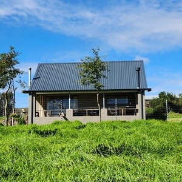
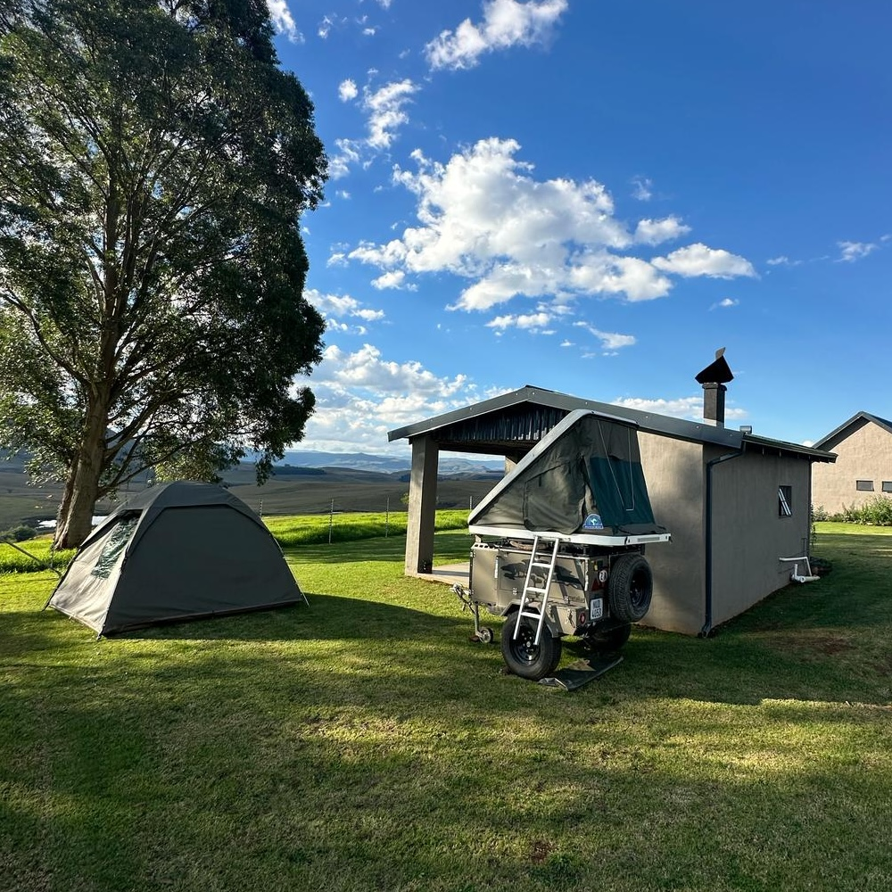

Choose your favourite Cottage!
Ripon Farm offers three sought-after self catering cottages and one stunning camp-site for the discerning Berg visitor. Each cottage as well as the camp-site is booked in its entirety.
Included with each cottage is cutlery, crockery, fridge, microwave, gas range, electric oven, kettle and toaster. The campsite also has electricity and a bathroom, but no cutlery or crockery.
Linen and towels are supplied in the coattages, but not soap and other hygiene items. Each cottage has DSTV and Wi-Fi. The camp-site has wi-fi.
Parking is secure, but not necessarily covered.
While the Underberg/Himeville community can be considered to be quite safe, all the normal precautions apply: when out and about, lock your car, keep your personal belongings on your person, keep a safe lookout. The cottages and campsite, together with the main farmstead and surrounds, are fully enclosed by a high-powered electric fence. Regular security patrols arranged by the local community include Ripon Farm's community.
Ripon Country Cottage is the original homestead on the farm (sleeps 11). It has recently undergone major renovations and upgrades to create a warm and comfortable farm stay, with all the amenities of a modern home, including 4 en-suite bedrooms, one seperate bathroom, open plan living / kitchen area heated by a wood stove, and a North-West-facing patio with enclosed braai.
Granny Smith Cottage is the smaller of the two cottages (sleeps 4) overlooking the main dam on the farm. It has also undergone major renovations and sports one en-suite bedroom, one twin bed bedroom with seperate full bathroom, seperate guest toilet, an open plan living / kitchen area heated by a wood stove, and a North-facing patio with enclosed braai.
Nguni Cottage
Nguni Cottage is a brand new, purpose built guest cottage a short walk from Ripon Country Cottage (sleeps 4). It has 2 en-suite bedrooms, open plan living / kitchen area heated by a wood stove, and a North-facing patio with enclosed braai.
Umtshitshi Camp
Umtshitshi Camp comprises a single large camp that can accomodate 1 large caravan, or two smaller caravans/trailers or tents. It has a dedicated lounge/kitchen area, a separate bathroom with hot water provided by a jetfire geyser (wood supplied), and a north-west facing patio with a built in braai. The camping area is level and fully grassed.